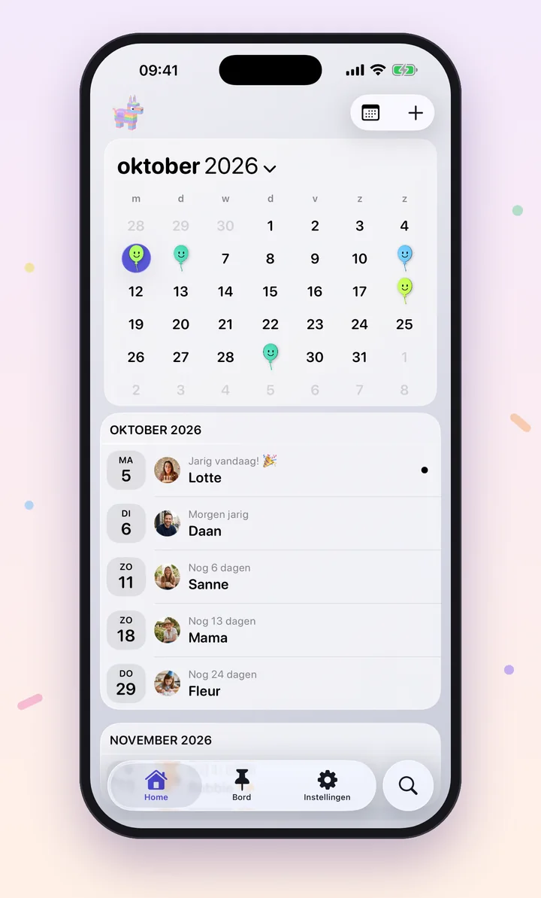
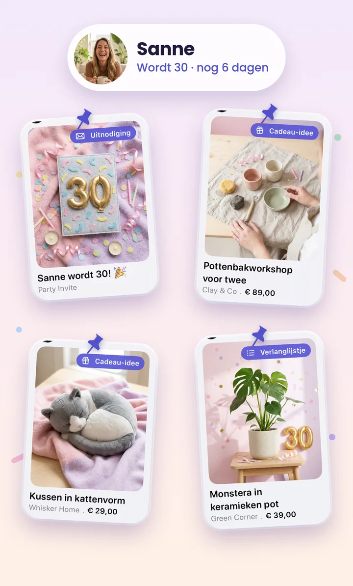
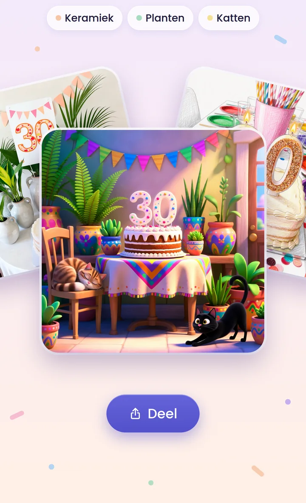
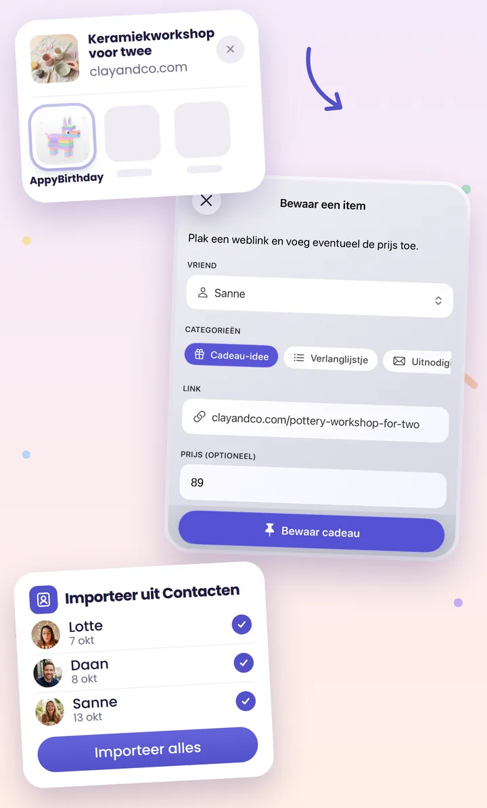
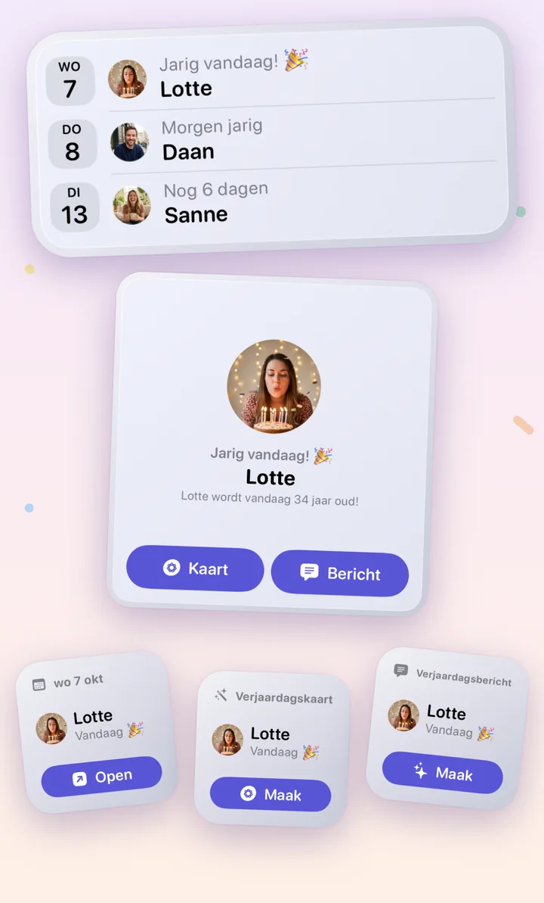
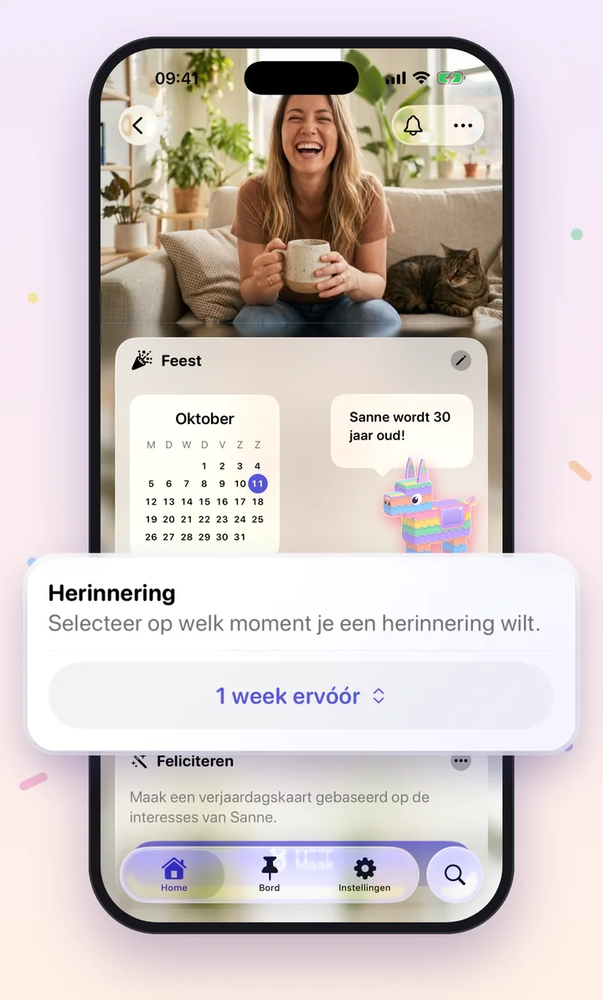
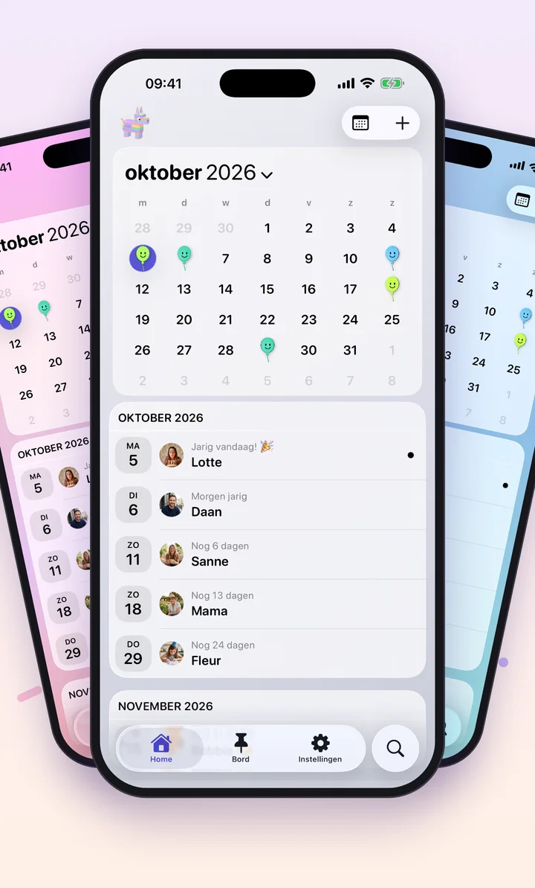
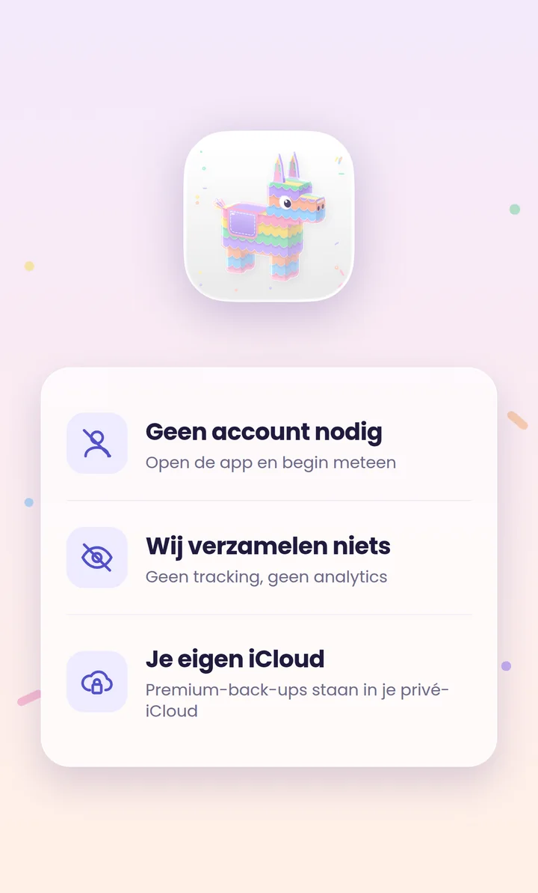
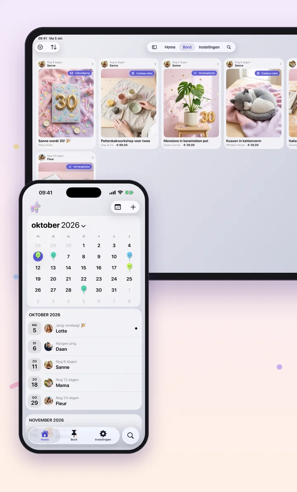

Andere apps herinneren je aan verjaardagen. Appy Birthday helpt je er écht te zijn.
Niet alleen onthouden.
Er écht zijn.
Krijg een seintje als er nog tijd is om iets te regelen, bewaar al je cadeau-ideeën op één plek en verstuur een kaart die niemand anders had kunnen maken. Geen account. Geen advertenties. Geen gegevens verzameld.
Binnenkort in de App Store
Het perfecte cadeau voor elke vriend
Ideeën, verlanglijstjes en uitnodigingen
Alle cadeau-ideeën, verlanglijstjes en uitnodigingen voor iedereen, overzichtelijk bij elkaar.

Een kaart, net zo uniek als zij
Gemaakt van wat Sanne leuk vindt
Maak een unieke verjaardagskaart op basis van waar de jarige van houdt, met Image Playground van Apple. Delen doe je in een paar tikken.

Bewaar cadeaus van elke website
En importeer alle verjaardagen uit Contacten
Zie je online het perfecte cadeau? Tik op Deel, kies Appy Birthday en het staat meteen op het verjaardagsbord van de jarige. Werkt ook voor verlanglijstjes en uitnodigingen.
Importeer ze uit Contacten, of voeg ze een voor een toe, met of zonder geboortejaar.

Wie is er jarig? In één oogopslag
Maak een kaart of bericht direct vanaf je beginscherm
Zie in één oogopslag wie er binnenkort jarig is. Maak een kaart of bericht direct vanaf je beginscherm, zonder de app te openen.

Herinnerd als er nog tijd is
Kies per persoon het perfecte moment
Stel per persoon in wanneer je een seintje krijgt: een week van tevoren voor het cadeau van je moeder, op de dag zelf voor je collega.

Maak hem helemaal van jou
Thema's, achtergronden en app-iconen
Kies uit thema's, achtergronden en app-iconen.

Privé, vanaf het begin
De verjaardagen van je vrienden blijven van jou
Wij verzamelen niets. Premium-back-ups staan in je eigen, privé-iCloud.
- Geen account nodigOpen de app en begin meteen
- Wij verzamelen nietsGeen tracking, geen analytics
- Je eigen iCloudPremium-back-ups staan in je privé-iCloud

Nu ook op iPad
Plan elke verjaardag op het grote scherm

Gratis & Premium
Herinneringen, het verjaardagsbord, kaarten en één widget zijn gratis. Premium (per jaar of eenmalig) voegt importeren uit Contacten, alle widgets, iCloud-back-up en extra thema's en app-iconen toe.
Appy Birthday 4 komt eraan
De volledig vernieuwde versie voor iPhone en iPad staat binnenkort in de App Store.
Binnenkort in de App Store